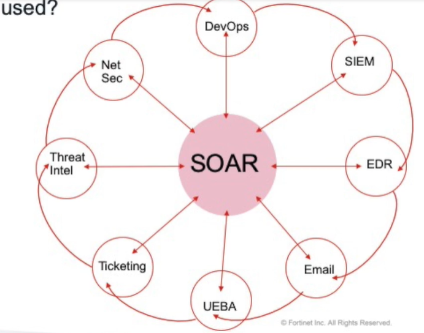

SOAR:security, orchestration, automation and response.
Automatiza processos relacionados a segurança.
Alert fatigue:Muitos alertas em um dia, diminui a chance de dar atenção a todos os alertas.
Investigation
Playbooks:
Automated processes and maintaining humam authority over the process
Workflows
Playbook
Why is SOAR used?
To synchronize tools, accelerate response times, reduce alert fatigue, and compensate for the skill shortage gap.
How is SOAR used?
